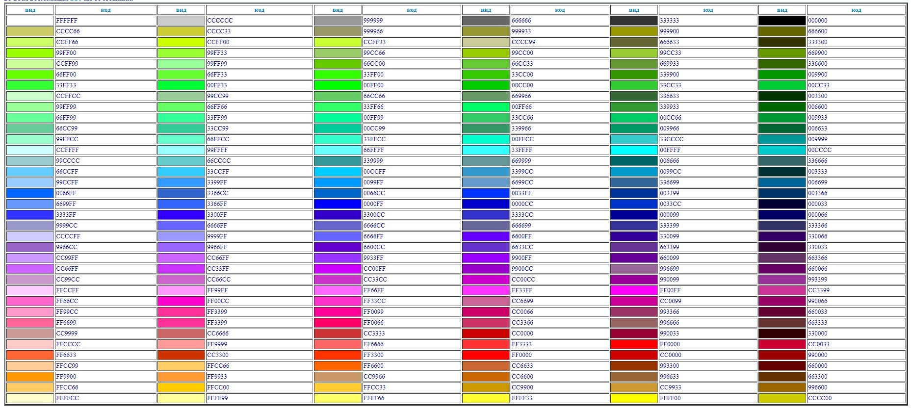

Когда мы делаем сайт, есть проблема в восприятии цвета компьютеров, которые были сделаны хороший десяток лет назад. Все дело в том, что браузер всегда старается подстроить цветовую палитру документа под системные настройки и возможности монитора, путем самостоятельного смешивания цветов и их замещения. Как результат - иногда пользователь видит не совсем то, что хотел ему показать web-мастер.
Выход из этой ситуации был найден в применении палитры, каждый цвет которой гарантированно передается одинаково всеми браузерами на разных платформах. Это так называемая гарантированная палитра, еще ее называют безопасной палитрой. В эту палитру входят цвета, цветовые составляющие которых, принимают следующие значения:00,33,66,99, CC,FF, во всех возможных 216 их сочетаниях.
